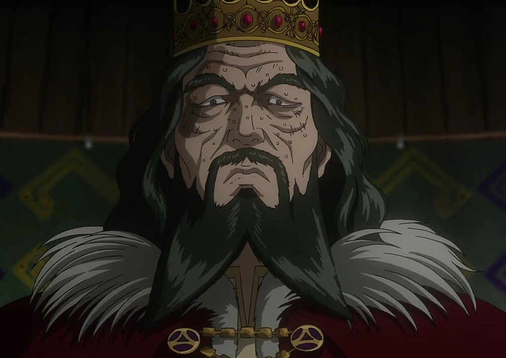

Sumário
- Início
- Origem
Sweyn Forkbeard
Sweyn foi o rei dinamarquês que conseguiu conquistar quase toda a Inglaterra e o País de Gales, mantendo o controle de seus reinos mais ao norte. Sua astúcia, ferocidade, crueldade e táticas de batalha mantiveram tudo sob controle absoluto.
Origem
O Rei Sweyn retratado em Vinland Saga é inspirado diretamente em Sweyn Forkbeard (Svein Haraldsson), rei histórico da Dinamarca, Noruega e Inglaterra no final do século X e início do XI. Na vida real, Sweyn foi um líder militar altamente influente, responsável pela invasão da Inglaterra e pela deposição do rei anglo-saxão Æthelred.

| Campo |
Informação |
| Nome |
Sweyn Forkbeard |
| Nacionalidade |
Dinamarquês |
| Criador |
Makoto Yukimura |
| Papel na História |
Rei da Dinamarca e da Inglaterra; governante central na disputa política envolvendo Canute e Harald. |
| Idade |
Idoso durante os eventos principais |
| Família |
Pai de Canute e Harald |
| Personalidade |
Frio, calculista, severo e pragmático; prioriza poder e estabilidade acima de afetos ou moralidade. |
| Habilidades |
Habilidade política, comando militar estratégico e autoridade consolidada como monarca veterano. |
| Arco Narrativo |
Figura imponente e temida cujo governo influencia a transformação de Canute e desencadeia tensões profundas no reino. |
| Primeira Aparição |
Arco dos Mercenários — Vinland Saga |
| Observações |
Inspirado em um rei histórico real, conhecido por governar a Dinamarca e conquistar a Inglaterra. |